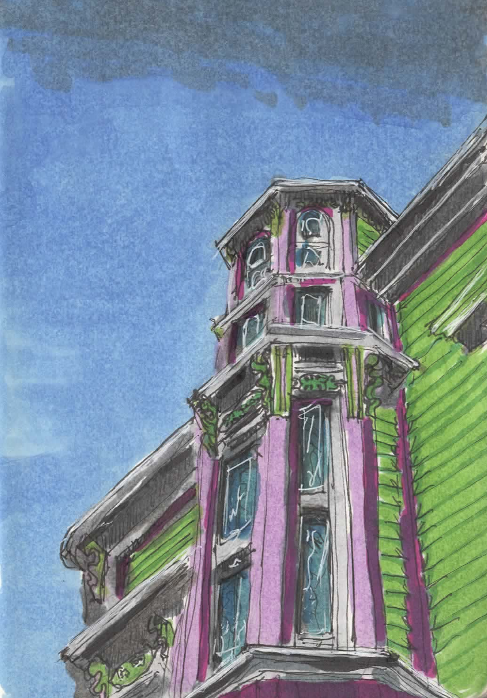

Lunenburg Events
Music, theatre, arts, and community — for the next two weeks.
Upcoming events in Lunenburg
Sunday, November 8
11:00 AM
— Night Happenings — Michelle Darwin — at Lunenburg Art Gallery Society
Tuesday, November 10
12:00 PM
— Tunes on Tuesday: Trio Timia — at LAMP
Thursday, November 12
8:00 AM
— Lunenburg Farmers Market — at Lunenburg Community Centre
Saturday, November 14
7:00 PM
— Trio Timia — at LAMP
Tuesday, November 17
12:00 PM
— Tunes on Tuesday: Sunmi Han — at LAMP
Thursday, November 19
8:00 AM
— Lunenburg Farmers Market — at Lunenburg Community Centre
7:00 PM
— LHS Speaker Series: Bryn Pottie — The Great Lunenburglary — at The Hungry Traveler Cafe
7:00 PM
— "Making Room: The Architecture of Adaptation" RAIC Public Lecture by Charlie Bourne — at Lunenburg School of the Arts
Saturday, November 21
10:00 AM
— Pottery, Vintage & Thrift Market — at Central United Church Hall
7:00 PM
— BILLY JOEL Tribute Night — at Old Confidence Lodge
7:00 PM
— Sunmi Han, piano — at LAMP
Loading events…